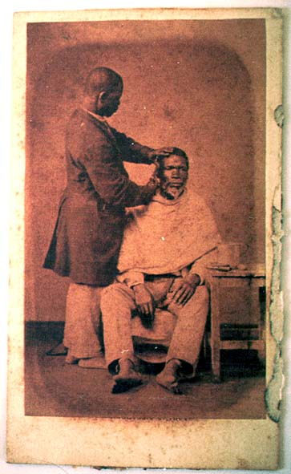

|
|  |
|
Christiano Júnior, Tipos de escravos do Rio de Janeiro
|
Even before the definitive abolition of slavery, Brazilian photographers would offer collections of 'types of slaves' such as Christiano Júnior's series of carioca street scenes from the 1860s and 1870s. Often the actors posing for Christiano's cartes-de-visites were indeed former slaves, who for a couple of coins were staging a harmonious image of the past for the photographer's lens. Yet Christiano's images, while intended as industrially manufactured relics of the mid-century, could also be read (literally) against the grain: as testimonies of the galloping pauperisation of the urban black population of Rio de Janeiro shortly before and, indeed, after abolition, under the pressure of large-scale 'urban reforms' coupled with real estate speculation that resulted in the demolition of popular quarters such as the Morro do Castelo and the formation of the first favelas, or hillside shantytowns.
|